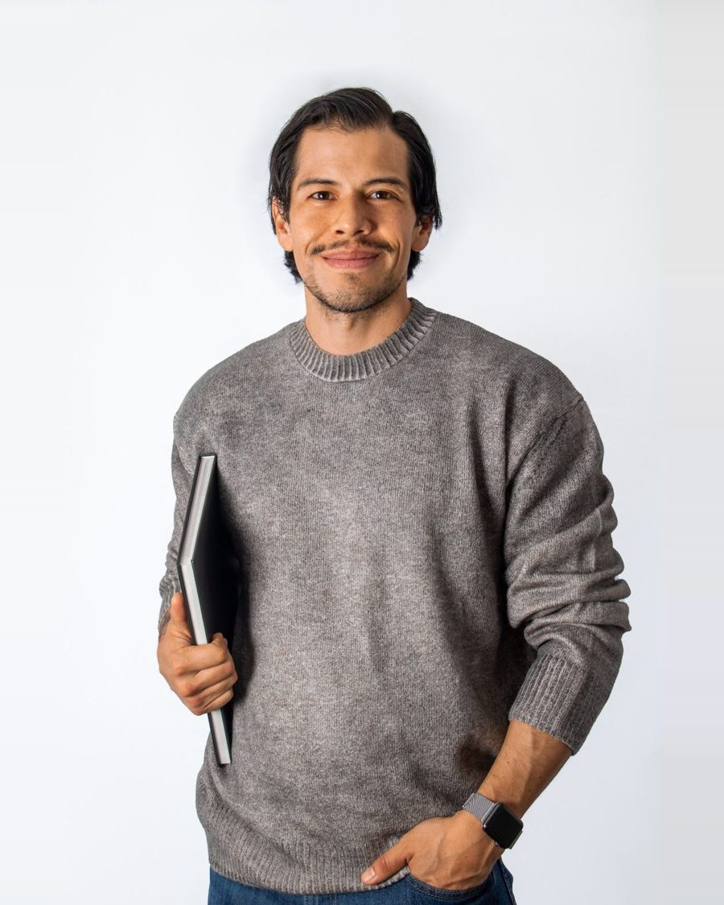

Coaching en Comunicación Efectiva
Gestiona audiencias exigentes con seguridad y efectividad.
Te acompaño en un proceso de coaching en comunicación efectiva personalizado, privado y diseñado a tu medida para que proyectes presencia ejecutiva frente a un equipo, una audiencia remota o un gran auditorio.
Sesión exploratoria inicial gratuita · 20 minutos
¿Te identificas con esto?
La comunicación no es solo lo que dices, sino cómo conectas genuinamente con los demás.
Es muy probable que domines tu área de experiencia técnica, pero al momento de comunicarla te enfrentes a alguno de estos obstáculos.
Pánico escénico y presión mediática
Taquicardia, nervios que crecen con cada minuto y cada pregunta, el bloqueo mental que aparece al hablar en público, salir en un medio o grabar un video profesional para redes.
Desconexión con quien te escucha
Notas que las personas se distraen, miran el celular o no logran conectar con tu mensaje porque tu discurso, tu voz y tus apoyos visuales se sienten planos o monótonos.
Inseguridad con tu imagen y tu presencia
Te cuesta saber qué hacer con las manos, tu postura delata tus nervios y tu presencia carece de la fuerza necesaria para generar credibilidad y captar la atención.
Muletillas y desorden mental
Sabes perfectamente lo que quieres decir, pero al hablar te enredas, abusas de las muletillas y te cuesta estructurar un mensaje efectivo y de gran recordación.
Nadie nace siendo un experto en comunicar. Expresarnos de forma efectiva frente a los demás es una habilidad que se entrena. No se trata de fingir ser otra persona ni cambiar tu esencia — se trata de potenciar tu autenticidad para que hables con naturalidad, seguridad y absoluta convicción, siempre con una base técnica que te ayude a entender qué herramientas te dan confianza.
Método V.I.P
Un coaching 100% práctico y customizado para trabajar en tus retos y oportunidades de mejora.
Entiendo la comunicación como un conjunto de hábitos que se pueden moldear. Trabajamos tres dimensiones hasta que alcances un dominio total.
V · O · Z — I · M · P · A · C · T · O — P · N · L
Voz
Reconocimiento, intención, ritmo y proyección- Descubrimiento del tono, volumen y modulación óptimos de tu voz.
- Técnicas de respiración para evitar la aceleración y la fatiga vocal.
- Consistencia e intención: herramientas para proyectar autoridad sin gritar.
- Control de muletillas y sonidos distractores.
Impacto y presencia ejecutiva
Lenguaje no verbal- Dominio de la postura corporal, la gestualidad y la expresión facial.
- Uso estratégico del espacio, virtual o presencial.
- Control del miedo escénico y transformación de la ansiedad en calma.
- Simulación de entrevistas para TV, radio, podcasts o transmisiones en vivo.
- Técnicas de contacto visual, manejo de cámara y lectura de teleprompter con naturalidad.
Programación Neurolingüística
Arquitectura del discurso y gestión de audiencias- Autoexamen de hábitos de lenguaje y comunicación.
- Gestión mental y emocional para eliminar creencias limitantes.
- Estructuración de discursos persuasivos: storytelling y retórica.
- Diseño de apoyos visuales y mecanismos de interacción con la audiencia.
- Cómo responder preguntas difíciles bajo presión — control de crisis.
Diagnóstico V · I · P
¿Te sientes preparado para comunicar de forma efectiva frente a tu próxima gran audiencia?
6 preguntas, menos de 2 minutos. Descubre en cuál de las tres dimensiones — Voz, Impacto o PNL — se está fugando tu seguridad al hablar.
Estimación orientativa a partir de tus respuestas. No sustituye la sesión exploratoria gratuita, en la que revisamos tu caso real con más detalle.
¿Qué transformación experimentarás?
Un cambio radical en cómo te perciben — y en cómo te sientes al hablar.
En 6 sesiones de coaching podrás experimentar:
-
01
Resultados medibles en tu desarrollo personal y profesional, no solo teoría: un espacio seguro para tomar consciencia y practicar.
-
02
La transformación de una persona que trabaja desde su esencia para proyectar seguridad y credibilidad desde el primer segundo que habla.
-
03
Control en los distintos espacios donde presentas tus ideas: mensajes complejos convertidos en mensajes efectivos que inspiran e influencian.
-
04
Capacidad de responder con efectividad, manteniendo equilibrio emocional y control del cuerpo para acompañar tus mensajes.
-
05
Autonomía y confianza: pierdes el miedo y empiezas a disfrutar cada vez que te encuentras frente a tus audiencias.

Sobre mí
Politólogo y Magíster en Ciencia Política, especializado en comunicación política y opinión pública. He asesorado a entidades públicas y privadas en la formulación de estrategias de comunicación y en la estructuración de proyectos de cultura y cambio social, en lugares como la Dirección de Cultura Ciudadana de la Alcaldía Mayor de Bogotá, el Departamento Nacional de Planeación, la Gobernación de Bolívar y USAID.
Coach Internacional Certificado por la International Coaching Community de Londres. He acompañado a más de 500 profesionales de distintas industrias y cargos a mejorar su forma de transmitir información, impactar entornos y gestionar audiencias exigentes, mediante técnicas de autoconocimiento y PNL.
Soy también fotógrafo profesional: he dirigido documentación audiovisual de proyectos liderados por PNUD y USAID en Putumayo, Guaviare y Meta. Hoy soy consultor independiente en comunicación para el cambio social y profesor de habilidades gerenciales en la Pontificia Universidad Javeriana y en el CESA.
Sesión exploratoria inicial gratuita en 20 minutos
profesionales, directivos, speakers y voceros han experimentado este proceso de coaching.
Antes de escribir
Resolvemos tus dudas principales.
El proceso es 100% virtual. Las sesiones de manejo de cámara y de espacios tienen componentes prácticos muy potentes, incluso en este formato.
Un mes y medio, con una sesión sugerida por semana. Nos adaptamos a tus tiempos y entendemos que pueden surgir imprevistos: siempre es posible reprogramar una sesión si me informas 4 horas antes del inicio de la misma.
¡Absolutamente! Este espacio está diseñado precisamente para quienes parten desde cero o sienten algún tipo de bloqueo. Te guío paso a paso en un ambiente seguro, sin juicios y 100% personalizado según tus necesidades y expectativas.
Da el primer paso
Hacia una comunicación que abre puertas.
No dejes que el miedo, la falta de técnica o los pensamientos saboteadores sigan limitando tu confianza y bloqueando tu crecimiento profesional. Escríbeme por WhatsApp para analizar tu caso en una sesión exploratoria de 20 minutos, completamente gratis.
💬 Escríbeme por WhatsApp y comencemos